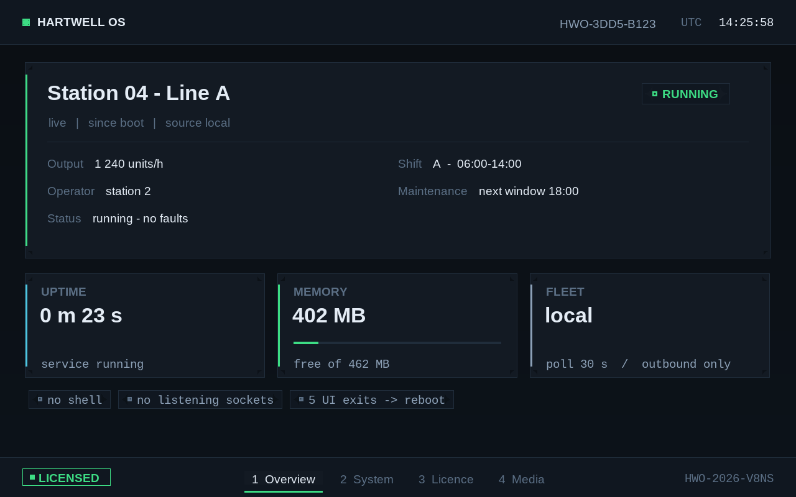
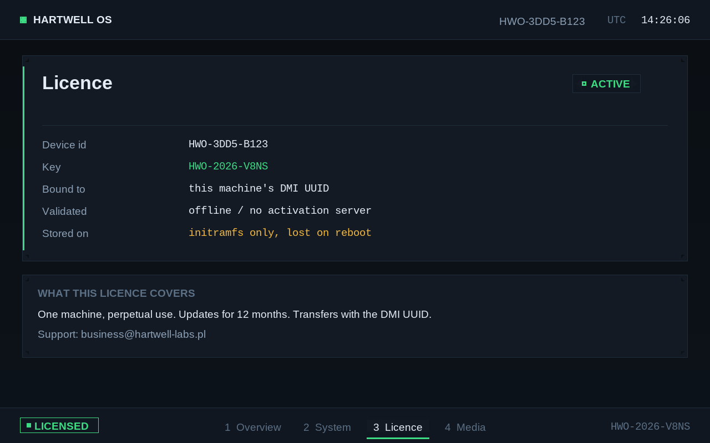
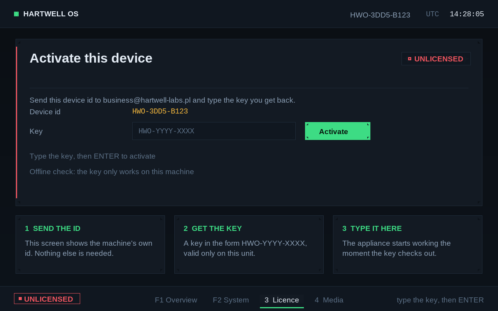

One machine. One job.
Nothing else runs.
Hartwell OS is a single-purpose appliance system for machines that must not drift: signage players, kiosks, controllers, test benches. It boots from an 18 MB image straight into a full 1280×800 interface drawn directly on the framebuffer, in about a second, and there is no shell, no package manager, no remote login and no open port behind that screen. A per-device key turns it on.

- Offline licence key, no phone-home, no activation server
- One 18 MB ISO, boots on any x86-64 box
- No shell, no package manager, no remote login
- Content replaced over one outbound HTTP poll — or not at all
- Licence and content persist on an HWO_CFG partition
Boots to the job
1.06 s from kernel start to PID 1, measured under QEMU/KVM on this machine. 12 s under pure emulation. No boot menu, no login, no desktop.
Provable
Every screen on this page is a framebuffer dump from a running guest, taken with the QEMU monitor — not a mockup, not a design render.
Licensed per device
The device id comes from its DMI UUID; the key is checked by arithmetic on the unit. A key file copied to another machine is rejected. No server to go down.
How a unit gets licensed

An unlicensed unit boots into an activation screen showing its device id. There is no way past it: no shell, no network tools, no package manager in the image.
You send the id; you get back HWO-YYYY-XXXX. Type it on the unit, or bake it into the image. The key is checked by arithmetic against that machine's DMI UUID, so it does not open any other box.
# vendor side ./tools/keygen.py --uuid 9d2f7c1e-8b4a-4c61-9f2d-3a5b6c7d8e9f device=HWO-3DD5-B123 key=HWO-2026-V8NS # on the image: /etc/hartwell/license key=HWO-2026-V8NS device=HWO-3DD5-B123

Run it in a minute
Stock QEMU is enough. Nothing is installed on the host.
# boot the ISO (BIOS/El Torito) qemu-system-x86_64 -cdrom hartwell-os-1.0.iso -m 256 -uuid 9d2f7c1e-8b4a-4c61-9f2d-3a5b6c7d8e9f # rebuild it from source, licence baked in HWO_KEY=HWO-2026-V8NS HWO_DEVICE=HWO-3DD5-B123 ./build.sh # and a bootable disk image with the persistent state partition ./tools/mkdisk.sh sudo dd if=dist/hartwell-os-1.0-usb.img of=/dev/sdX bs=4M && sync
| SPEC | VALUE |
|---|---|
| Kernel | Linux 6.12.118 LTS, x86_64 |
| Userspace | Alpine 3.22 minirootfs, busybox only (~6 MB unpacked) |
| Appliance runtime | 1.2 MB static binary, no libc on target |
| Image | 25 MB bootable ISO (BIOS + UEFI), initramfs 5.4 MB gzip |
| Boot time | 1.06 s to PID 1 (QEMU/KVM) · 12 s pure emulation |
| Display | 1280×800 framebuffer, 32 bpp, drawn by the runtime itself (DRM: bochs / virtio-gpu / simplefb) |
| Interface | 3 screens — Overview, System, Licence; keyboard only, no mouse |
| Input | PS/2 or **USB keyboard+mouse** via evdev, works with no VT session |
| Media | PNG sequence decoder — own inflate, no libpng; FPS 1–60, default 10; poster.png still |
| Secure Boot | optional with OVMF; key set in tools/secureboot.sh; db.cer + *.auth on disk |
| Text | bitmap atlases generated from Liberation Sans / Bold / Mono |
| Session | no shell, no package manager, no remote login, no listening socket |
| Failure policy | UI crash ×5 → automatic reboot |
| Licensing | offline, HWO-YYYY-XXXX, bound to DMI UUID |
| Fleet agent | outbound HTTP poll every 30 s: content pull + heartbeat |
| RAM | 128 MB floor; tested in 256 and 512 MB |
| State | HWO_CFG VFAT partition: licence + content survive reboot |
| Installer | one disk image (BIOS + UEFI loaders, two partitions), written with dd |